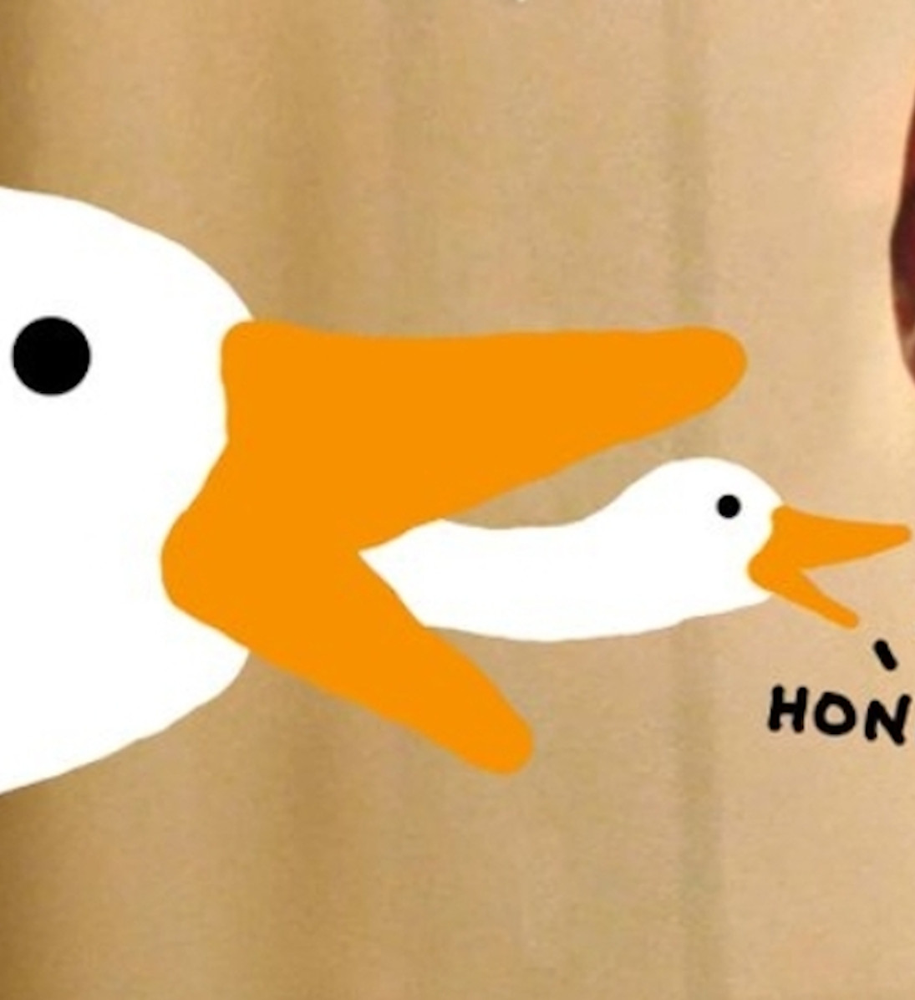

notjessg
artesane de ideas. diría que construyo herramientas pero eso suena tan meta como utilitarista (y de pretensiosa). acá comparto mis weadas.
blog fogata insurrektrans
mi twitch (stream jueguitos)
mi cuenta de mastodon
mi insta
mis repos en github
si querés usar el código, escribime por todon.eu :)